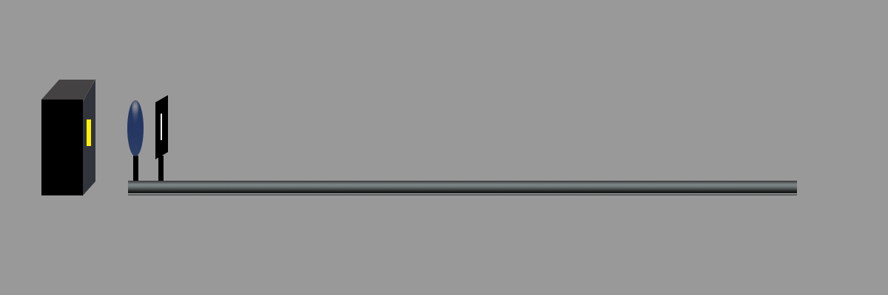
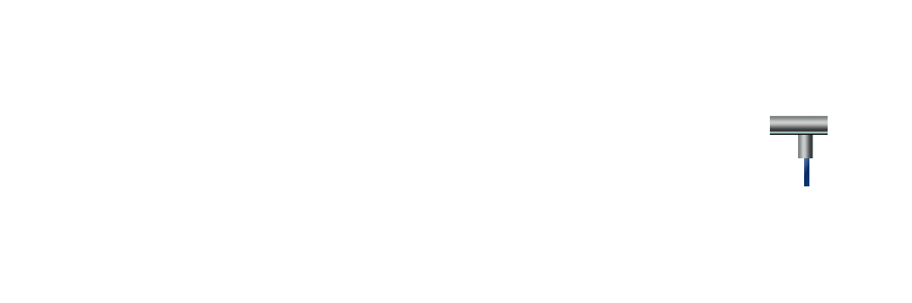
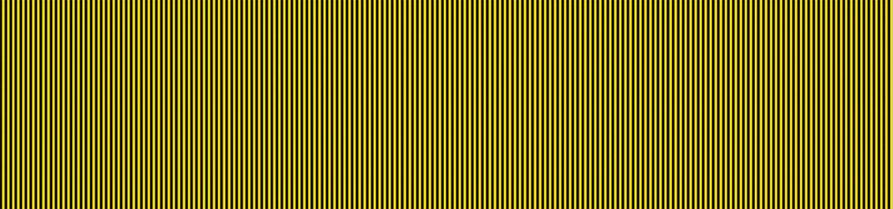
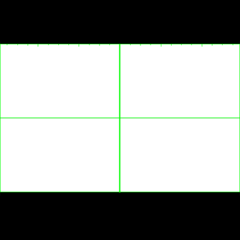
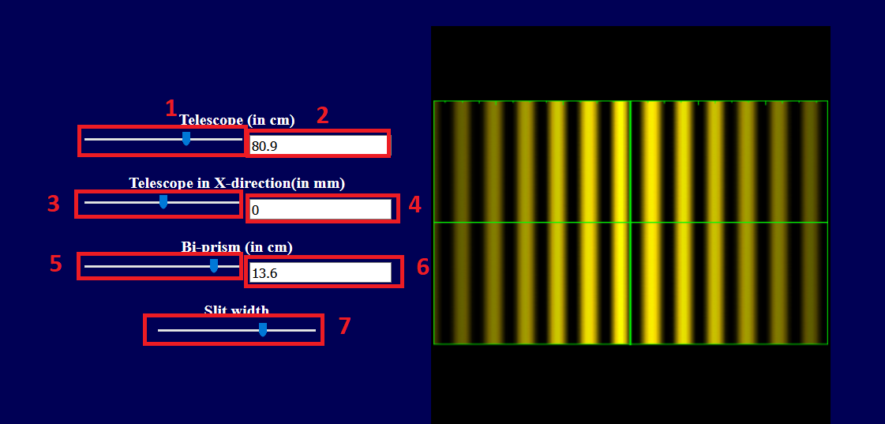

Bi prism


Controller
Fringe
Telescope (in cm)
Telescope in X-direction(in mm)
Bi-prism (in cm)
Slit width
 
×
Instructions
1st slider to adjust the distance between the slit and the telescope (in cm). (
1
)
1st text box to read the value of slider 1. It can be used for fine adjustment.(
2
)
2nd slider to adjust the position of the telescope along x axis (in mm). (
3
)
2nd text box to read the value of slider 2. It can be used for fine adjustment.(
4
)
3rd slider to adjust the distance between the slit and the prism (in cm). (
5
)
3rd text box to read the value of slider 3. It can be used for fine adjustment.(
6
)
4th slider to adjust the slit width. (
7
)
To observe the continious motion of spectra, just click on the slider button and the use up/down key of you keyboard.
